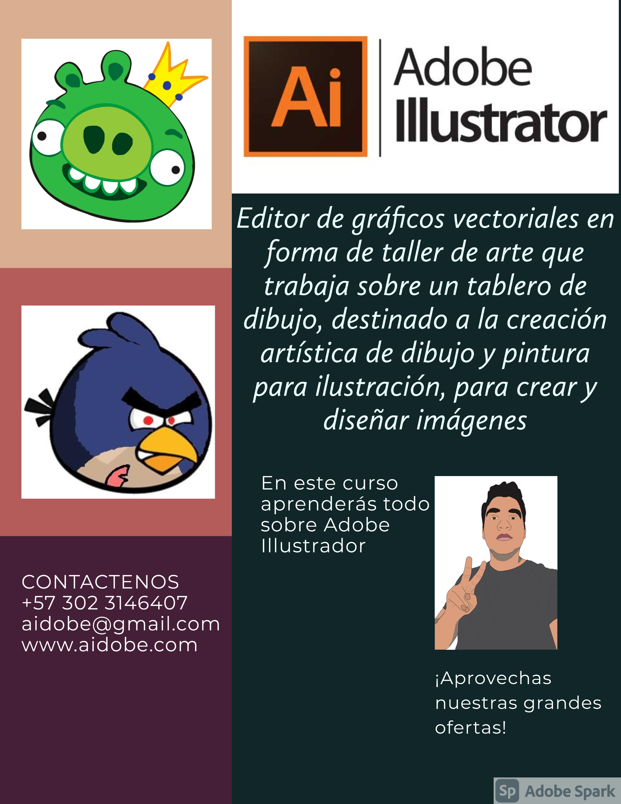
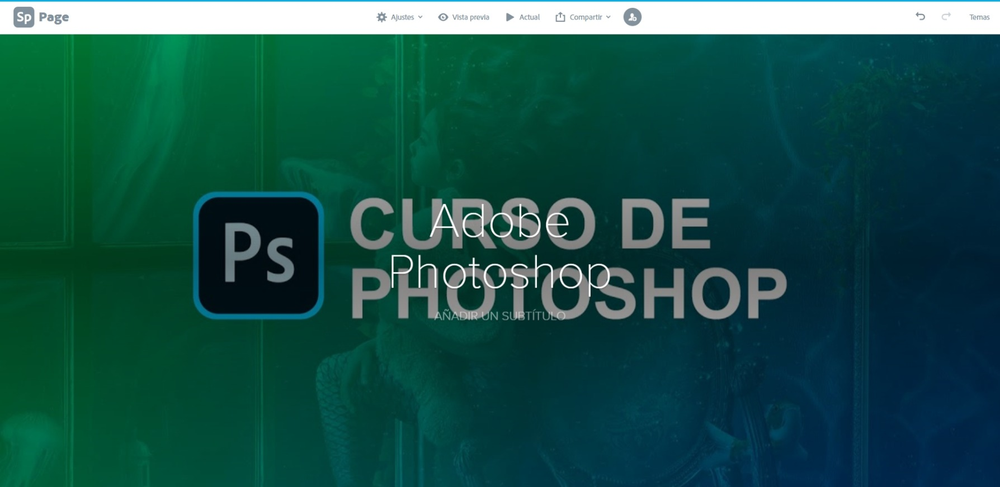
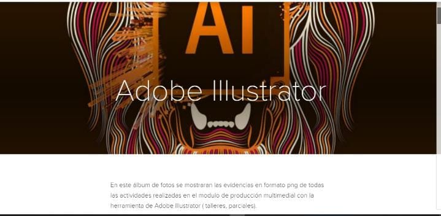
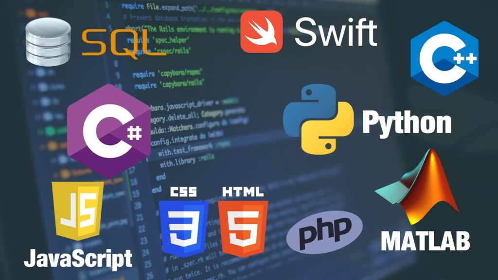

A través del siguiente link entraran el folleto realizado en la herramienta Adobe Spark en el cual se puede encontrar información detallada de un curso que se brinda sobre Adobe Photoshop. Por ejemplo, crear capas, unir fotos, aplicar filtros etc. Para mas información: Folleto Adobe Photoshop.

A través del siguiente link entraran el folleto realizado en la herramienta Adobe Spark en el cual se puede encontrar información detallada de un curso que se brinda sobre Adobe Ilustrador. Por ejemplo, crear capas, vectorizar cualquier tipos de imagen, aplicar filtros, diseñar logos, etc. Para mas información: Folleto Adobe Ilustrator.

A través del siguiente link entraran un álbum de fotos diseñado en Adobe Spark que contiene todas las evidencias de los talleres, actividades y parciales realizados en el programa de producción multimedial con la herramienta de Adobe Photoshop en el corte numero 1. Donde se aprendió a utilizar capas, a unir imágenes, a quitar fondo, aplicar filtros, etc. Para mas información: Album Adobe Photoshop.

A través del siguiente link entraran un álbum de fotos diseñado en Adobe Spark que contiene todas las evidencias de los talleres, actividades y parciales realizados en el programa de producción multimedial con la herramienta de Adobe Ilustrator en el corte numero 2. Donde se aprendió a utilizar capas, a vectorizar, a darle color a esos vectores, utilizar formas, etc. Para mas información: Lenguajes de programación.

El contenido de esta sitio web se basa en diferentes conceptos donde se explica lo que es un lenguaje de programación de una forma más clara, permitiéndole a cualquier tipo de lector, entenderlo perfectamente, además, también podemos encontrar, para que sirve un lenguaje de programación y se aclaran ciertas ideas como por ejemplo: existen muchos tipos de lenguajes de programación y aunque todos comparten una cosa en común (permitir al programador comunicarse con una computadora, a través del código fuente) cada lenguaje se especializa para ser utilizado en ciertas áreas como por ejemplo: crear aplicaciones móviles, para resolver problemas, crear software o aplicaciones de entretenimiento, entre muchísimos otros. En la página web, también se puede encontrar los diferentes tipos de lenguajes que existen para programar, además, se dan algunas pautas en donde se explica para que se usa cada uno, dependiendo de los objetivos del software que se quiera realizar. Como no puede faltar, se encuentran también algunos ejemplos de línea de código de diferentes tipos de lenguajes de programación. Para mas información: Lenguajes de programación.